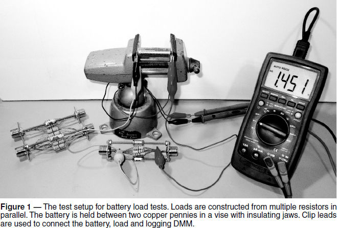
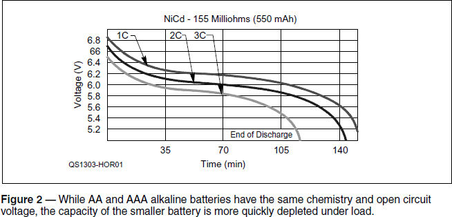
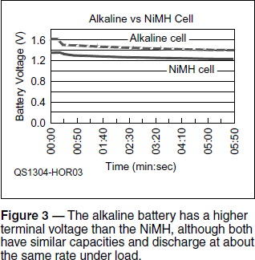
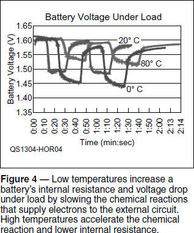

Experiment #123 — Battery Characteristics, Part 2
In last month’s column, I explored some of the basic terminology used to describe and compare batteries.1 Material from Batteries For a Portable World clearly showed the differences between the common types of batteries that hams use to supply power for radios and accessories.2 This month, we’ll measure some common batteries by using the data logging function of an inexpensive digital multimeter (DMM).
Data Logging Voltmeter
Let’s face it, taking regular measurements of a slowly changing parameter is bor-r-r-r-ring. I’ve done my share of watching a ticking clock and meter or gauge but today there are automated tools to do that job. They never get distracted, forget, or misread the data. The tool we’ll use this month is the data logging DMM.
A full fledged data logger, such as a Fluke 2625A Hydra model (www.fluke.com) with multiple channels and high speed high accuracy precision measurements, is way beyond the needs of a typical ham. What we need is a single channel voltmeter with an interface to a PC.
The smaller sibling of the 2625A is Fluke’s 289 DMM, which has impressive specifications for a voltmeter. Features include a USB interface and companion software so you can store or log data on a PC. This is a top-of-the-line DMM with a $600 price tag (the older Fluke 189 sells for a couple hundred less). I love my ultra reliable Fluke DMM but for ham shack data logging, I needed a less expensive solution.
A trip to the Jameco catalog (www.jameco.com) turned up the under $100 house brand MS8226, Jameco p/n 137462, with decent specs and an RS-232C interface. Searching the usual Internet bargain sites also turned up similar meters, some for as little as $30. You might also get lucky by watching for used meters from Fluke and other high end manufacturers.
The MS8226 has all the usual functions, plus temperature (°C) with an included thermocouple, capacitance (50 nF to 100 µF), frequency (to 5 MHz), duty cycle and true RMS measurements with an unspecified upper frequency limit. The RS-232C interface requires a USB-to-serial converter or running the host software on an older PC with a serial port.
Without making this a product review, I’ll just say that the meter works as advertised and includes an easy to understand manual. The software is very basic, but useful as a means of creating time stamped data files of measurements from the voltmeter. Once the data is on the PC, you can export it into spreadsheet format for graphing or analysis as described later.
Loading and Testing Batteries
We’re going to record battery voltages with a resistive load applied every few seconds over an extended period of time. Comparisons will be made by manually transferring data into a multi-column spreadsheet for graphing. (The spreadsheet used for this column is available on the Hands-On Radio website.)
Remember that batteries store a lot of energy. When choosing a load, plan for the heat that must be dissipated by using resistors with an adequate power rating and keeping them off of surfaces that can be damaged by elevated temperatures. The maximum power dissipation during a load test will be E2/R, where E is the battery terminal voltage.
Use load resistances that will draw some- what more than the Best Discharge Rate current in Table 1 of the previous experiment. Values around 1 Ω will work well for these tests, drawing a maximum current of 1.5 V / 1 Ω = 1.5 A, and dissipating a little over 2 W (1.5 V2 / 1 Ω = 2.25 W). With this power dissipation a 5 W resistor can get hot enough to burn you or a workbench surface. (Don’t use incandescent lamps as loads — their resistance varies with current.)
If you make your own loads, use several resistors in series or parallel to spread out the heat as shown in the photo of my test set in Figure 1. My loads are made out of paralleled 2 W metal oxide resistors. They are soldered between SO-239 UHF coax sockets made into a frame with #6-32 screws and threaded spacers. A banana plug fits snugly into the SO-239 making a fine high current connection or, at lower currents, clip leads can be used. Typical plastic battery holder contacts and wiring may not be heavy enough to handle the higher than normal discharge currents in these tests. I used copper pennies held in an insulating vise as my fixture contact with an extra heavy clip lead to the load.

AA to AAA Comparison
Before beginning, it’s worth noting that what is usually referred to as a battery is a single package of chemicals more correctly referred to as a cell. A set of cells connected together form a battery, which derives from the original meaning of a group of identical pieces, such as an artillery battery of several guns. An assembly of six individual lead acid cells, each producing 2 V and connected in series create a vehicle’s 12 V starting battery. In the case of single cell batteries, the word cell and battery are interchangeable.
Let’s start by comparing two fresh batteries that use the same chemistry but have different capacities. I used AA and AAA alkaline batteries sold by Costco under their Kirkland brand name. Battery capacity is not specified by Costco but third party testing has found the AA cells to supply approximately 2300 mAh and the AAA capacity is probably about half that.
Figure 2 shows the initial portion of a 30 minute battery comparison when connected to a 1 Ω resistor load at room temperature (about 21° C). You can see that the initial terminal voltages are approximately the same and that the capacity of the smaller AAA battery is depleted more quickly. At the end of the load test, (not shown in Figure 2)the AA cell terminal voltage recovered to 1.38 V and the AAA cell to 1.22 V.

Alkaline to NiMH Comparison
The open circuit voltage of the fresh rechargeable NiMH AA cell shown in Figure 3 is lower than that of a fresh alkaline cell by about 0.3 V. Both drop about the same amount when connected to a 1 Ω load. That difference narrows to 0.2 V after about 6 minutes. The 0.3 V margin can translate to a lot of extra operating time if alkaline cells are used.


Temperature and Internal Resistance
A battery’s temperature affects its internal resistance quite a bit as you can see in Fig-ure 4. The same fresh battery was tested at 0, 20 and 80° C by connecting it to a 1 Ω load for 10 s with a 10 s rest between load periods. The open circuit terminal voltage was approximately the same at all three temperatures, varying only 8 mV from 1.604 to 1.612 V. The cold battery voltage dropped substantially under load — initially about 0.26 V at 1.6 A load, implying an internal resistance, RINT of 0.26 / 1.6 = 0.16 Ω. At room temperature, voltage dropped 0.125 V for RINT = 0.078 Ω. At 80° C (hot enough to burn the experimenter’s fingers!) the voltage drop of 0.064 V indicates RINT = 0.04 Ω, a 2:1 variation with temperature. This can be important when trying to get the most performance from a battery over a wide temperature range!
Other Data Logging Tasks
Obviously, data logging can be put to many other uses, such as recording temperature or current consumption. As with the radio astronomy project, logging can record audio (noise levels in that case) as well. A spreadsheet can convert voltages from sensors directly into physical units and combine different data elements to measure differential temperatures, ratios, minimum and maximum values and so forth. Best of all, a data logger can patiently record data to catch a power dropout or intermittent noise that never seems to happen when you’re around.
Notes
1All previous Hands-On Radio experiments are available to ARRL members at www.arrl.org/hands-on-radio.
2I. Buchmann, Batteries In a Portable World, 2011, pp 34-37. Available from your ARRL dealer or the ARRL Bookstore, ARRL order no. 1156. Telephone 860-594-0355, or toll-free in the US 888-277-5289; www.arrl.org/shop; pubsales@arrl.org.